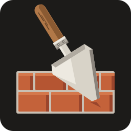
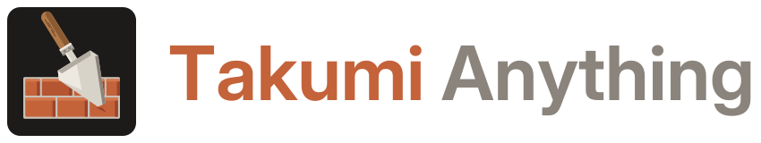
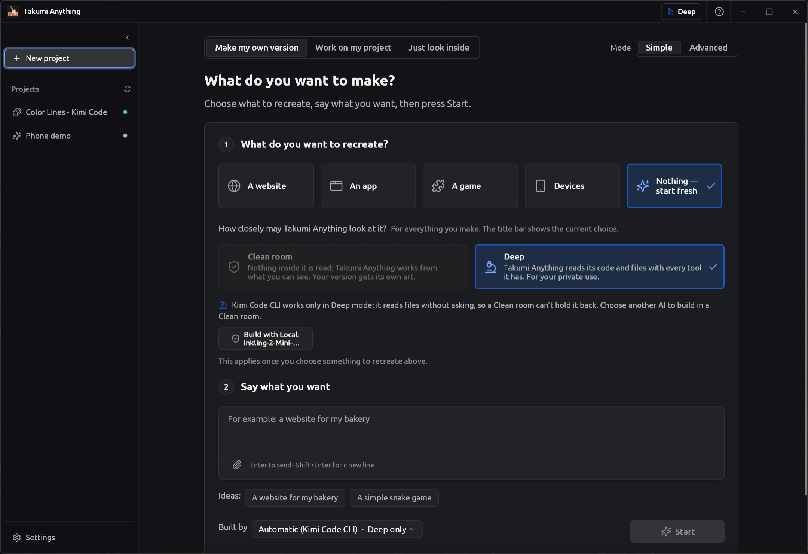
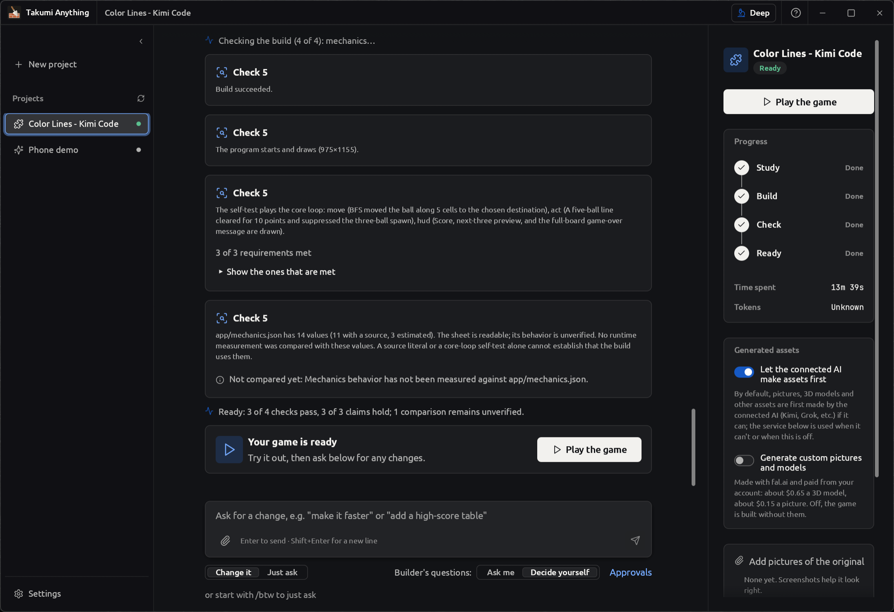
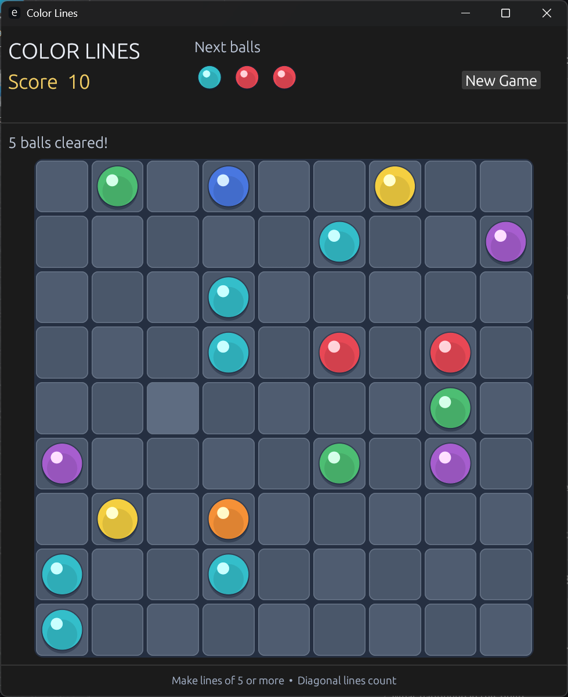
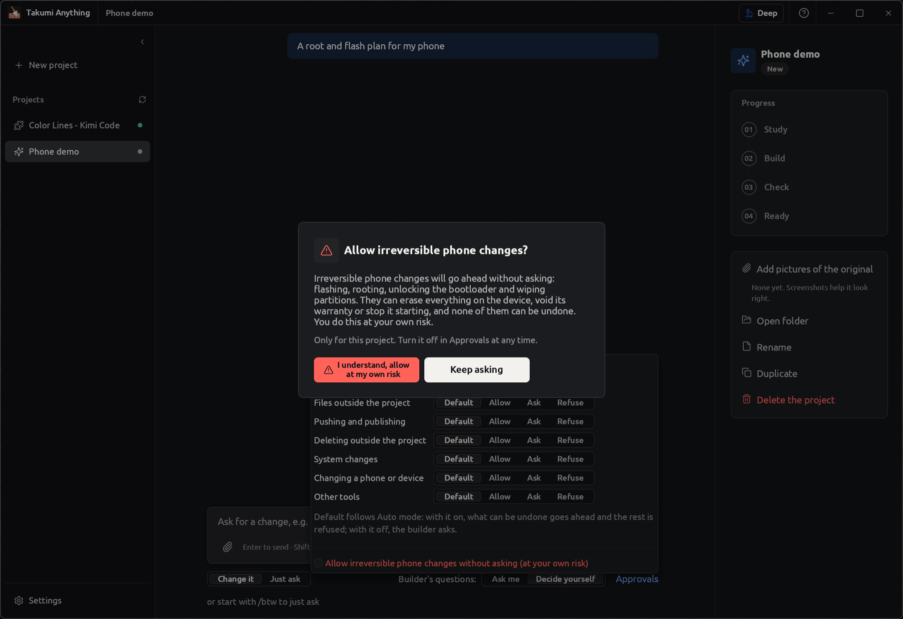

See how a website, app or game works — then have AI build your own version.
匠 Takumi means master craftsman.
We downloaded the earlier Craft and found no way to connect Kimi Code, so we built that. Local models were a hot topic, so we added them our way — Takumi's own llama.cpp engine.
We did this before the upstream release / refactor. This is a prototype: a sketch of ideas the Craft team may never use as code — just to show what could be added.
Unofficial fork of storytold/craft-anything. Provided AS IS, without warranty. MIT OR Apache-2.0.




Stable Rust. From the repository:
cargo build --release -p takumi-anything -p takumi-anything-cli
cargo run --release -p takumi-anything
Does not replace Craft Anything. Source: github.com/Mitroshenkov87/takumi-anything
If you'd like to help: donations cover the AI tokens and time spent building this.
Donations (TRON TRC-20, USDT or TRX): TYveZBXaSpM4FEHa6iGrc7A6zuLfS4z3x6
Send only via the TRON (TRC-20) network; other networks lose funds permanently.